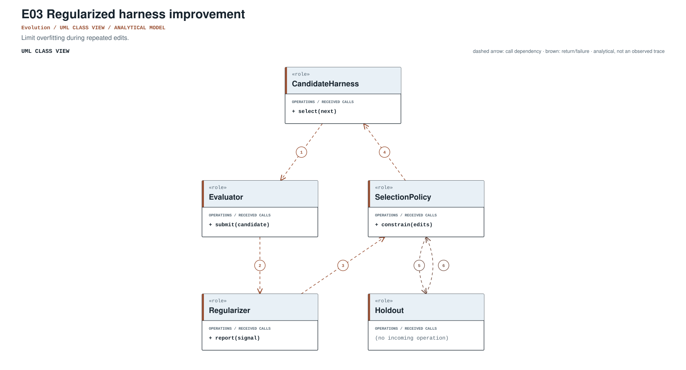
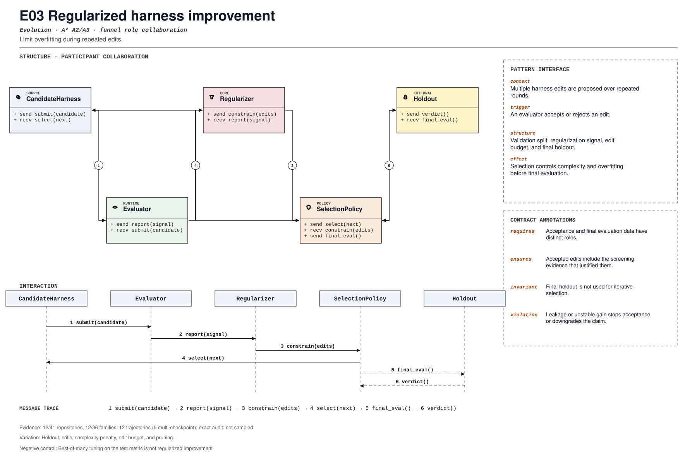

PROMPT SKETCH
Screen every candidate edit on separate acceptance data before it reaches final evaluation. Accepted edits must carry the screening evidence that justified them.Limit overfitting during repeated edits.
repeated_acceptance_decisionRECORD STATUSCandidate · v0.1.0The proposed contract drawn as participant roles, received calls, and numbered dependencies.

The same roles and calls as a class collaboration and a numbered message sequence.

Where the mechanism applies. All four dimensions belong to the proposed match, not just its vocabulary.
The obligation that clients, operators, and auditors should be able to rely on.
Best-of-many tuning on the test metric is not regularized improvement.
The hot spot is admitted only where the protected semantics survive.
Holdout, critic, complexity penalty, edit budget, and pruning.
Test leakage detection, repeated selection, complexity penalty, and holdout.
Did selection add untouched evaluation and complexity controls?
An illustrative prompt and a small design sketch for the proposed contract. Names and APIs are invented; this is not a repository excerpt.
Screen every candidate edit on separate acceptance data before it reaches final evaluation. Accepted edits must carry the screening evidence that justified them.def accept(candidate, screen, holdout):
screening = screen.evaluate(candidate)
if not screening.passed:
return Rejected(candidate, screening)
final = holdout.evaluate(candidate)
return Accepted(
candidate,
screening=screening,
final=final,
) if final.passed else Rejected(candidate, final)Illustrative design sketch. Final evaluation is not a second screening set; keep the roles distinct. This example is a teaching aid, not implementation evidence or a conformance claim.
The frozen rule that retrieves this record, the canonical source exemplar, and the control that should stay unmatched.
repeated_acceptance_decision(?i)\b(?:regulariz(?:e|ed|ation)|overfit|hold[_-]?out|validation[_-]?suite)\bFrozen expression, v0.1.0. A match is a retrieval cue, not a confirmed implementation.rrsi/critic.py:28Support: tests/test_core.py:128Up to five public files retrieved by the frozen cue and pinned to the audited commit. A match is a place to inspect, not a confirmed implementation.
rrsi/critic.py:28CANONICAL SOURCE02bytedance/deer-flowbackend/scripts/eval_memory_prescreen.py:69RETRIEVAL CUE03Darwin-Agent/HarnessXextensions/skills/skill-creator/scripts/generate_report.py:19RETRIEVAL CUE04mingju-c/HarnessForgeLlamaFactory/src/llamafactory/data/mm_plugin.py:258RETRIEVAL CUE05aaif-goose/goosedocumentation/blog/2025-08-04-mcp-jupyter-server/index.md:73RETRIEVAL CUEEach layer answers a different question. Do not substitute retrieval for review.
A concrete source anchor is available for this proposed record. It is one exemplar, not evidence that all repositories—or every contract field—conform.
Review boundary: this candidate and its specification come from an AI-assisted study. Independent human validation remains open.
33.3% of repository families in the frozen panel have at least one current cue, historical cue, or canonical source layer. This is not confirmed prevalence.
Current lexical-cue repositories: 12 / 41be50316e1db0rrsi/critic.py:28tests/test_core.py:128Critic screens leakage and overfit edits; history prunes low-yield components.
(?i)\b(?:regulariz(?:e|ed|ation)|overfit|hold[_-]?out|validation[_-]?suite)\bThis expression is a discovery instrument only. A match is a retrieval cue—not a confirmed implementation, pointcut match, or contract proof.